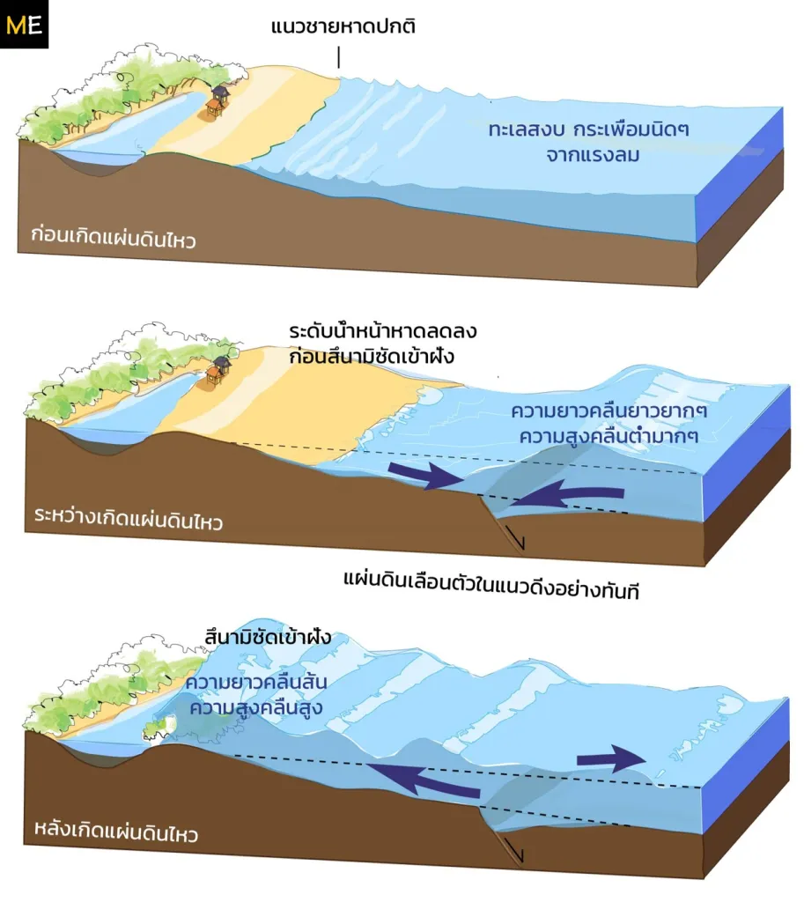
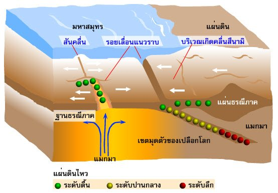

ความหมาย นิยาม ศัพท์ กลไกการเกิด คลื่นน้ำตื้น สัญญาณเตือนภัย และการรับมือ
สึนามิ (ญี่ปุ่น: 津波, แปลตรงตัว 'คลื่นท่าเรือ', ออกเสียง: [tsɯnami]) เป็นกลุ่มคลื่นน้ำที่เกิดขึ้นจากการย้ายที่ของปริมาตรน้ำก้อนใหญ่ คือ มหาสมุทรหรือทะเลสาบขนาดใหญ่ คำว่า "สึนามิ" ออกเสียงในภาษาญี่ปุ่นต่างกันเล็กน้อยกับการออกเสียงในภาษาอังกฤษว่า /suːnɑːmi/ หรือ /tsuːnɑːmi/ (ทซู นามิ โดยเป็นการควบ ท ซ ในเสียงญี่ปุ่น) ซึ่งมาจากคำว่า "ท่าเรือ" (津 สึ) และ "คลื่น" (波/浪 นามิ)
ในบางครั้งคลื่นสึนามิเคยถูกเรียกว่า "คลื่นยักษ์" (Tidal wave) แต่ในช่วงปีหลังคำนี้เสื่อมความนิยมลง โดยเฉพาะในแวดวงวิทยาศาสตร์เนื่องจากสึนามิไม่ได้มีความเกี่ยวข้องกับกระแสน้ำเลย คำว่า "คลื่นยักษ์" ที่เคยนิยมใช้มาจากลักษณะปรากฏทั่วไปซึ่งคือ คลื่นทะเลหนุน (tidal bore) สูงผิดปกติ ทั้งสึนามิและกระแสน้ำต่างก่อให้เกิดคลื่นน้ำพัดเข้าสู่ฝั่ง แต่กรณีของสึนามินั้นการเคลื่อนที่ของน้ำในแผ่นดินยิ่งใหญ่กว่าและกินเวลานานกว่ามาก จึงให้ความรู้สึกของกระแสน้ำสูงอย่างน่าเหลือเชื่อ
บรรดานักธรณีวิทยาและนักสมุทรศาสตร์เห็นว่า ชื่อคลื่นตามลักษณะของคลื่นนั้นควรแทนชื่อด้วยศัพท์ทางธรณีวิทยาและสมุทรศาสตร์ โดยปกติสึนามิประกอบด้วยกลุ่มคลื่นที่มีคาบเป็นนาทีหรืออาจมากถึงชั่วโมง เรียกว่า "คลื่นขบวน" (Wave Train) อำนาจทำลายล้างของมันสามารถครอบคลุมได้ทั้งแอ่งมหาสมุทร เช่น เหตุการณ์คลื่นสึนามิในมหาสมุทรอินเดีย ค.ศ. 2004 ที่มีผู้เสียชีวิตกว่า 230,000 คน ใน 14 ประเทศ
ในเชิงประวัติศาสตร์ ธูซิดดิดีส (Thucydides) นักประวัติศาสตร์ชาวกรีก ได้เคยเสนอไว้เมื่อ 426 ปีก่อนคริสตกาลว่า คลื่นสึนามิเกี่ยวข้องกับแผ่นดินไหวใต้ทะเล แม้ปัจจุบันความเข้าใจในธรรมชาติของสึนามิจะพัฒนาขึ้นมาก แต่นักวิทยาศาสตร์ยังคงศึกษาวิจัยเพื่อพยากรณ์เส้นทางของคลื่นและการปฏิสัมพันธ์กับชายฝั่งอย่างแม่นยำ
คลื่นสึนามิมีความแตกต่างจากคลื่นน้ำธรรมดามาก สามารถเดินทางได้เป็นระยะทางไกลหลายพันกิโลเมตรโดยไม่สูญเสียพลังงาน และเดินทางในน้ำได้ช้ากว่าการสั่นสะเทือนของแผ่นดินไหวซึ่งเดินทางในพื้นดิน ดังนั้น คลื่นอาจเข้ากระทบฝั่งภายหลังจากผู้คนรู้สึกถึงแผ่นดินไหวเป็นเวลาหลายชั่วโมง
คลื่นสึนามิมีพฤติกรรมเป็น "คลื่นน้ำตื้น" (Shallow-water Wave) แม้อยู่นอกทะเลลึก เนื่องจากขนาดของคลื่นที่ยาวมาก ความเร็วของคลื่นน้ำตื้นเท่ากับรากที่สองของผลคูณระหว่างความเร่งจากสนามแรงโน้มถ่วง ($9.8 m/s^2$) และความลึกของน้ำ เช่น ในมหาสมุทรแปซิฟิกความลึก 4,000 เมตร คลื่นจะเคลื่อนที่เร็วประมาณ 720 กม./ชม. ส่วนชายฝั่งความลึก 40 เมตร คลื่นจะช้าลงเหลือประมาณ 72 กม./ชม.
คลื่นสึนามิเกิดขึ้นจากการกระทบกระเทือนที่ทำให้น้ำปริมาณมากเกิดการเคลื่อนตัวเพื่อปรับระดับเข้าสู่จุดสมดุล สาเหตุสำคัญ ได้แก่:


สัญญาณเตือนธรรมชาติ: ขณะจุดต่ำสุดของคลื่นเคลื่อนเข้าสู่ฝั่ง ระดับน้ำทะเลจะลดลงอย่างรวดเร็วและทำให้ขอบทะเลร่นถอยออกจากชายฝั่ง (หากชายฝั่งลาดชันน้อยอาจร่นถอยไกลถึง 800 เมตร) นอกจากนี้บริเวณพื้นที่ต่ำอาจเกิดน้ำท่วมก่อนที่ยอดคลื่นใหญ่จะเข้าปะทะ และระดับน้ำอาจลดลงก่อนคลื่นลูกถัดไปจะพัดเข้ามา
มาตรการป้องกันและการสร้างกำแพง: ในต่างประเทศ เช่น ประเทศญี่ปุ่น ได้มีการสร้าง กำแพงกั้นสึนามิ สูงกว่า 4.5 เมตร บริเวณชายฝั่งที่มีประชากรหนาแน่น รวมทั้งสร้างกำแพงกันน้ำท่วมและทางระบายน้ำเพื่อลดแรงกระแทก แม้ในกรณีสึนามิขนาดใหญ่กำแพงอาจไม่สามารถป้องกันการสูญเสียได้ทั้งหมดแต่ช่วยลดความเร็วและความสูงของคลื่นได้
สำหรับประเทศไทย: หลังเหตุการณ์แผ่นดินไหวและสึนามิ พ.ศ. 2547 กรมอุตุนิยมวิทยาและหน่วยงานภาครัฐได้กำหนดมาตรการป้องกันภัย ติดตั้งระบบเตือนภัยสึนามิ และแนะนำให้ประชาชนอพยพทันทีเมื่อพบสัญญาณเตือนโดยไม่ต้องรอประกาศอย่างเป็นทางการ
หากเกิดแผ่นดินไหวรุนแรงริมชายฝั่ง หรือเห็นน้ำทะเลลดระดับลงอย่างรวดเร็วผิดปกติ ให้สงสัยทันทีว่าจะเกิดสึนามิ
รีบออกจากพื้นที่ชายฝั่ง วิ่งขึ้นที่สูง เนินเขา หรือขึ้นชั้นบนของอาคารคอนกรีตเสริมเหล็กที่มั่นคงแข็งแรง
อย่าลงไปดูชายหาดเมื่อน้ำทะเลลดลง เพราะคลื่นลูกแรกและลูกถัดๆ ไปอาจมาถึงอย่างรวดเร็วและรุนแรง
คลื่นสึนามิมาเป็นชุดหลายระลอก (Wave Train) ควรอยู่ในที่ปลอดภัยจนกว่าจะมีประกาศยกเลิกสถานการณ์จากหน่วยงานเตือนภัย
พิกัดศูนย์กลางแผ่นดินไหว: ละติจูด ๓.๓ องศาเหนือ, ลองจิจูด ๙๕.๘ องศาตะวันออก (นอกชายฝั่งทางเหนือของเกาะสุมาตรา)